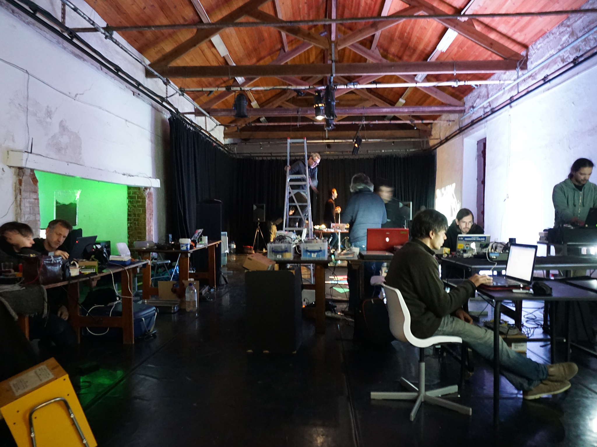
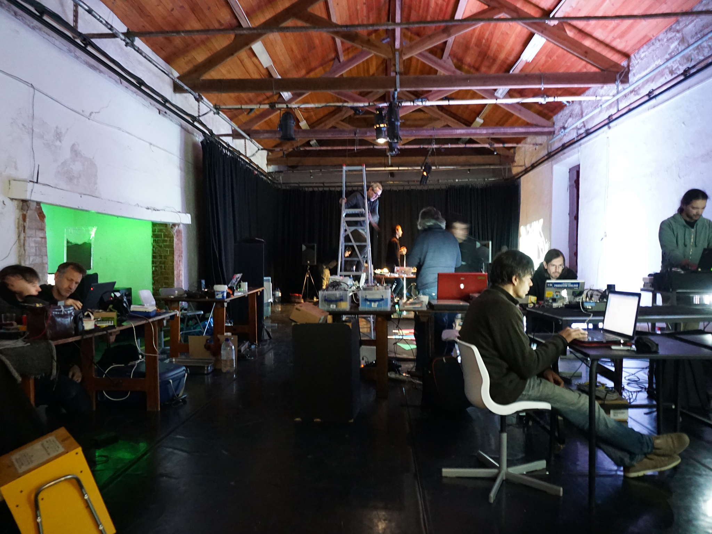

Li#gH%t
Li#gH%t is a sound installation that invites the public to discover and manipulate sounds and melodies hidden in the flickering light of electric candles. Users can listen to, and manipulate those hidden sounds by moving photovoltaic sensors close to the light of each candle, converting light into sound and creating an improvised soundscape. Several candles have been collected for this project, searching for the noises, sounds, and melodies concealed in their electronic circuits. The flickering LED effect of these candles is generally produced by simple integrated pulse width modulation circuits or blinking leds, which produce rhythmic beats, sounds and noises. While experimenting with the electronic interior of these candles, it was discovered that some of them can also have sound effects like jingles, alarms, train whistles, and other types of sound effects generated by integrated circuits that can imitate the flame by flickering the light. One of the reasons for this may be related to the mass manufacture of sound integrated circuits with different applications in consumer electronic devices, reusing their sound component to facilitate the creation of luminous effects on these electric candles.
Exhibition at Criatech - Digital Creativity & Technology, Aveiro 2022

Residency EXPAND! Art, Science and Tecnhology
at O Espaço do Tempo, Montemor-o-novo and Ciência Viva, Lisbon, 2018/2019
Presentation at Ciência Viva, Pavilhão do Conhecimento, Lisboa 2019
"EXPAND! Art, Science and Technology Residencies is a collaboration between O Espaço do Tempo, Ciência Viva and Audiência Zero. Together, we promote research projects in the digital arts with a strong technology research dimension. Over two weeks we will bring together creators at the intersection of art, science and technology to develop 11 prototypes of science mediation with a strong creative dimension. These contents will be presented to the public in two different moments: an exhibition at the Espaço do Tempo, in Montemor-o-Novo, organized with the local School Group; and an exhibition at the Pavilion of Knowledge – Ciência Viva Centre in Lisbon. The latter, scheduled for March 2019, will also include informal talks with artists in a relaxed sharing environment."
at O Espaço do Tempo, Montemor-o-novo and Ciência Viva, Lisbon, 2018/2019
Presentation at Ciência Viva, Pavilhão do Conhecimento, Lisboa 2019
"EXPAND! Art, Science and Technology Residencies is a collaboration between O Espaço do Tempo, Ciência Viva and Audiência Zero. Together, we promote research projects in the digital arts with a strong technology research dimension. Over two weeks we will bring together creators at the intersection of art, science and technology to develop 11 prototypes of science mediation with a strong creative dimension. These contents will be presented to the public in two different moments: an exhibition at the Espaço do Tempo, in Montemor-o-Novo, organized with the local School Group; and an exhibition at the Pavilion of Knowledge – Ciência Viva Centre in Lisbon. The latter, scheduled for March 2019, will also include informal talks with artists in a relaxed sharing environment."
 
 Exhibition at Frigatriscaidecafobia
Rosa Imunda, Porto 2016
Exhibition at Louro e Bambu – segundo acto, figuração do exótico
CAAA, Guimarães 2015